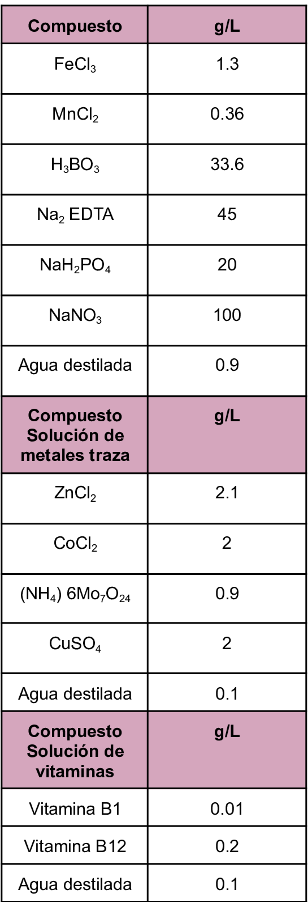

Es un medio clásico utilizado en el cultivo de microalgas y este posee sales que aportan nitrógeno y fósforo de igual forma contiene oligoelementos y vitaminas.Se puede emplear en el cultivo de Nannochloropsis gaditana.
Composición
Es un medio clásico utilizado en el cultivo de microalgas y este posee sales que aportan nitrógeno y fósforo de igual forma contiene oligoelementos y vitaminas.Se puede emplear en el cultivo de Nannochloropsis gaditana.
Composición

Gorriti, B., López, V., Radonic, M. & Berrueta, M. (2025). Metodología de cultivo de microalgas en el INIDEP. Inf ASES INIDEP Nֻº 022/25, 25 p. https://marabiertonew.inidep.edu.ar/server/api/core/bitstreams/04a7ace1-4f0e-457b-a9f1-224b3cb5d851/content